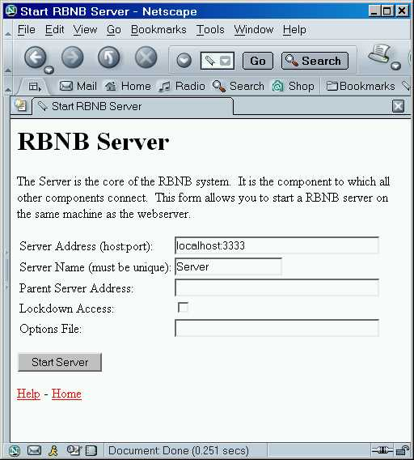

The DataTurbine server to which data sources and sinks connect, provides data buffering and routing functions. It is started by selecting the rbnbServer link on the WebTurbine page, shown in the figure.

It can also be invoked by running the rbnb.jar file using -jar
syntax as in:
java -jar [WebTurbine Installation Directory]/rbnb.jar
DataTurbine itself has no direct user interface. All interaction with DataTurbine is via connected applications, most notably the rbnbAdmin program. Its job is to enable information sharing between applications.
As such, this manual is very short. For additional detail about the DataTurbine in general and specific application interfaces in particular, look to the related documentation at the DataTurbine Web site .
DataTurbine needs to be run under a Java Virtual Machine (JVM). Different flavors of Java come by different names (e.g. java, jre , jview). See the Installation Guide for instructions as to how to setup scripts or shortcuts to conveniently invoke DataTurbine .
The following command line options are available:
| Option | Web Page Field |
Description |
| -a <server
address> |
Server Address |
Specifies the address of the server. The format: is: host:portwhere: host is either |
| -A <security file
URL> |
Specifies the URL of the security file. The security file determines whether a connection is allowed based on its DNS name or IP address. The file consists of a list of ALLOWED addresses (with optional lists of permissions) and a list of DENIED addresses. Without the file, all addresses are allowed. With the file, only addresses that match an allowed entry and not a more specific denied entry can be made. The syntax of the file is: # CommentMultiple addresses can be specified after each ALLOW or DENY entry, so long as they are separated by whitespace (spaces, tabs, carriage returns, and new lines). An address can be a specific address such as: rbnb.creare.comor a wildcard such as: 216.204.34.*The optional permissions parameter, which can only be added to ALLOW lines consists of the equals (=) followed by one or more allowed permissions from the following list:
File: # Allow Creare full access and NASA read/write/routing.Connections are allowed from all "nasa.gov" addresses, plus all "creare.com" addresses except "rbnb.creare.com". All other connections are denied. An example security file is available through the web. Its default URL is: http://localhost/Configuration/Security.rbnThis translates to: <install folder>/jakarta-tomcat-<version>/webapps/ROOT/Configuration/Security.rbnThis file contains comments, including some examples. If used as is, the file does not change the default security settings. Note: If the security file URL is inaccessible, the server may block until a low-level timeout occurs. |
|
| -C
<version> |
Selects a compatibility mode. This flag specifies that, where there are differences in behavior between releases, the server should behave a close as possible to the version specified. The default is the current version. Supported versions are:
|
|
| -F | Automatically loads any archives in the server's
home folder. This operation may cause errors as the system will attempt to load every sub-folder in the server's home folder as an archive. If some of them are not actually archives, the system will report problems. Also note that this operation can destroy files or move sub-sub-folders if the system thinks that it recognizes the files (those with .rbn extensions) or sub-sub-folders (those with names like RB# or FS#, where # is an integer value). |
|
| -H
<archive home dir> |
Specify the archive home
directory. All archive activity (load, creation, and append) will
take place in the specified archive home directory. When using
the "-F" command-line flag, archives will be automatically loaded from
this archive home directory. The argument to the "-H" flag must be an absolute or relative path without any embedded spaces. |
|
| -l <period>, <cache>, <archive>, <access> |
Sets up the server log, a source called
_Log. Period specifies the amount of time between status reports, in seconds. Two special values can be set:
Archive frames specifies the size of the archive file in terms of frames. If an archive is created, it defaults to a size equal to that of the cache. Archive access specifies that the log should be archived. It can be one of: At least one parameter must be specified, but each parameter is optional as shown in the examples. Default: This means status being logged for each connection once an hour to a cache of 1000 frames.-l 3600,1000,0,none Examples: The first example is the default setting. The second example uses the default period and cache size, and creates an archive of 1000000 frames. The third example changes the cache size to 100 frames and appends to an existing archive. |
|
| -L |
Lockdown Access |
Specifies that the server is to locked
down. Only connections from the local machine will be allowed. |
| -m <period>, <cache>, <archive>, <access> |
Sets up the server metrics, in a source called
_Metrics. The arguments to this flag are the same as those for the server log (-l), except that they set the metrics period and metrics source size. Note: a period of OFF, NONE, or 0 turns metrics off. Default: This means metrics running once a second to a cache of 3600 frames.-m 1,3600,0,none |
|
| -M <maximum activity threads> |
Specifies the maximum number of activity threads
to have available. These are Java threads that are used to handle certain types of actions - the only current activity performed is adding frames of data to ring buffers within a source handler. The value specifies the maximum number of such actions that can be handle simultaneously by the server. Note that the actual number of threads created may be less than this value - the server creates threads only when needed. A large number of threads runs the risk of exceeding the maximum number of threads allowed or adversely impacting performance due to the time needed to switch between threads. A small number of threads can adversely effect performance by unnecessarily forcing independent actions to be handled sequentially. The default value is 100 threads. |
|
| -n <server
name> |
Server Name |
Specifies the name of the server. |
| -O <options file URL> |
Options File |
Specifies the URL of the options file. The options file allows server options to be saved in a file that can be reused. It also provides the user of the Web RBNB Server startup page access to the options not otherwise available. This contents of this file are options from this page. Comments can be added by starting a line with a "#". An example options file is available through the web. Its default URL is: http://localhost/Configuration/Options.rbnThis translates to: <install folder>/jakarta-tomcat-<version>/webapps/ROOT/Configuration/Options.rbnThis file contains comments, including some examples. If this file is used unchanged, no additional options are actually added. Note: If the options file URL is inaccessible, the server may block until a low-level timeout occurs. |
| -p <parent server
address> |
Parent Server Address |
Specifies the address of the server that is to be this
server's parent. The server's lineage determines the full name of the server and determines where in the hierarchy of connected servers this server appears. For example:
|
| -s <shortcut
name>, <server address>, [<cost>] |
Specifies a shortcut to another server. The shortcut name specifies the name of the shortcut relative to the local server. The server address specifies the address of the server to which the shortcut leads. The local server can be used to retrieve data from the remote server via the shortcut. The optional cost specifies how much this shortcut costs to use. The server actually maps the shortcut to the full name of the server and then determines the best path amongst all possible paths based on the various costs. |
|
| -S <maximum open filesets> |
Specifies the maximum number of filesets that
can be kept open simiultaneously. A large value runs the risk of running into a operating system per user limit on the number of open files. A small value may adversely effect performance because one source may be blocked waiting for another source to finish writing to an archive. The default value is 10. |